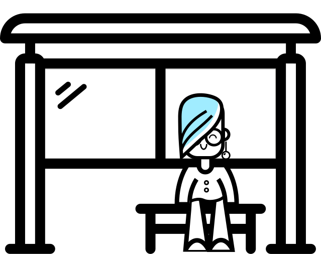
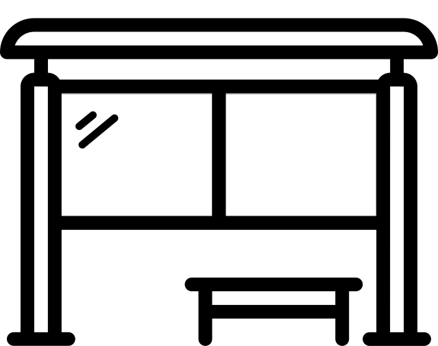

no
ponto.


você não está sozinhx! para dar ínico a este projeto, fizemos uma pesquisa por amostragem. Na pergunta "como você avalia a sinalização nos pontos de ônibus da capital paulista?" Nenhum dos entrevistados (isso mesmo, NENHUMzinho) disse que estava totalmente satisfeito com o serviço.
Ainda da tempo de dar seu pitaco e fazer seu textão! responde aqui?!
no site, além de consultar quais linhas param em cada ponto, você pode gerar uma lista e um QR code com essas informações.
aí é so imprimir e colar na parada! você facilitará sua vida, dinamizando o acesso no app, e a de quem tá perdido, melhorando a sinalização dos transportes da cidade.
com o applicativo noponto.sp é só scanear o QRcode do projeto e, em dois clicks, você terá seu trajeto, com filtros de periodicidade e tudo!
com design simples, mas certeiro. sem excesso de botões (aqueles que você nunca usa e nem sabe pra quê servem), com fonte grande, ideal para quem está em movimento. ah, e também vai ter assistente de voz!
você pode estar pensando: "mas pra quê outro app de localização?" nós temos pelo menos 3 bons motivos:
se seu celular ficar sem bateria, você não precisa mais pedir informação na banca
ajuda quem não conhece são paulo a se localizar sem gastar internet móvel.
é uma boa oportunidade de praticar o discurso. Se a prefeitura nao faz, nós fazemos!